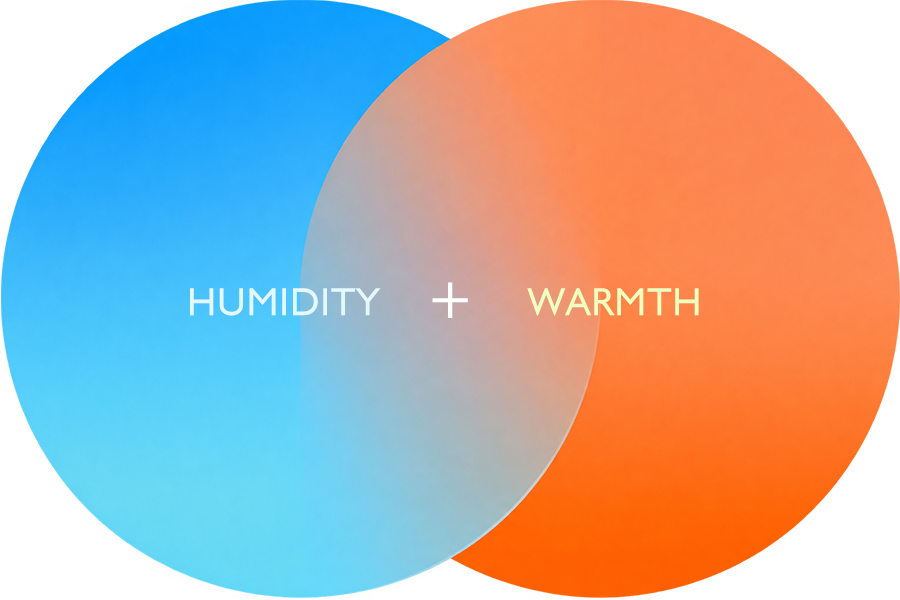
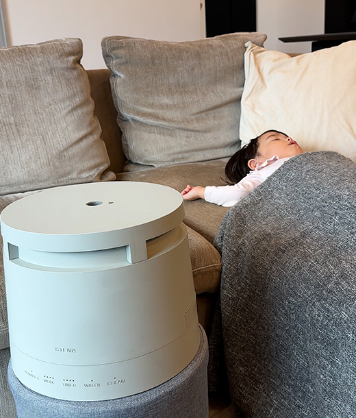
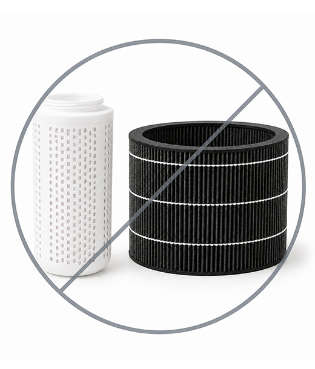
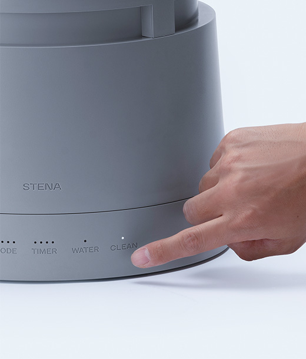
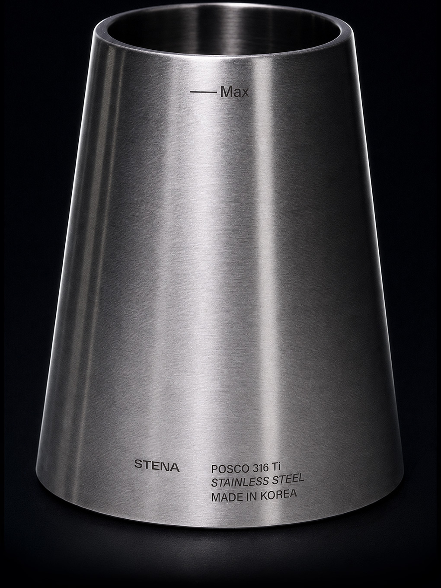
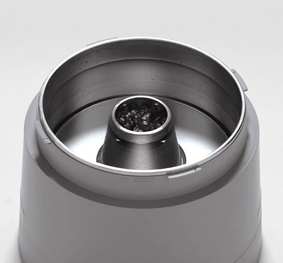
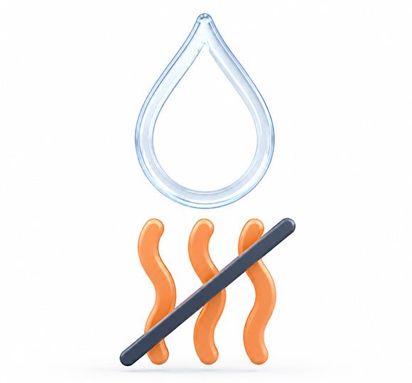
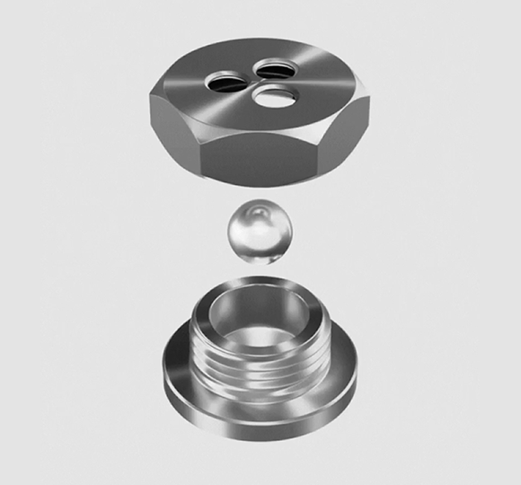

エアコンも、切って寝ているのに。
加湿器をつけていても、
朝の喉がカラカラ。
目覚めとともに感じる、喉の不快感。
乾燥の原因は、暖房ではありませんでした。

お一人様1回だけ
クーポンでお得に購入できるチャンスは今だけ
クーポン適用で月々 2,462円 2045円 税込 2,250円
クーポンコード STENA
通常価格 78,000円(税込)
キャンペーン価格 65,000円(税込)
さらに
クーポン使用で 10,000円OFF
クーポン適用後
月々 2045 円 (税込 2,250円)
一括購入時の価格 54,000 円（税込）

お部屋の温湿度をいつでも確認できる温湿度計を特別にお付けします。

この心地よさを、まずは実際に体感してください。自信があるからSTENAは「60日間の返金保証」付き。リスクなしで、気軽にお試しください。
＞ 詳しく見る
エアコンも、切って寝ているのに。
目覚めとともに感じる、喉の不快感。
乾燥の原因は、暖房ではありませんでした。
【校閲メモ｜公開前に必ず削除してください】
種別: コンテンツの矛盾（科学的矛盾点） ｜ 危険度: 高
指摘: 冒頭の「乾燥の原因は、暖房ではありませんでした。」は、既存の3箇所と正反対の主張になっています。
・#methodIntro本文「暖房で室温が上がるほど、空気中の水蒸気量が同じであれば相対湿度は下がります。」
・同セクションのチャート見出し「暖房で室温が上がるほど、相対湿度は下がりやすい」
・#dryStress「冬の室内は、暖房の使用などによって空気が乾燥しやすくなります。」「暖房を使用する冬の室内では、相対湿度が低下しやすく、空気の乾燥を感じやすくなります。」
これら3箇所は一貫して「暖房が乾燥の一因」と説明しているのに対し、冒頭だけ「暖房が原因ではない」と読める断定をしており、同一ページ内で読者が矛盾を感じる可能性が高いです。
判定: 改善可能 → 提案: 意図はおそらく「暖房を切っている（＝稼働していない）のに、それでも乾燥する」という、暖房の有無に関わらず起きる現象を言いたいものと推測します。であれば「暖房を切っているのに」という前提を明示し、「原因は暖房ではない」という一般化した断定は避ける。例：「エアコンは切って寝ているのに。それでも、朝の喉はカラカラ。」など、"暖房が稼働していない状況でも起きる"という限定的な文脈が伝わる表現に調整することを推奨します。
ここに画像が入ります
超音波式、気化式、ハイブリッド式、スチーム式。
加湿器には「方式」があります。
「たぶん、超音波式？」「何式か、気にしてなかった」
——そう答える方が、ほとんどです。
でも実は、同じ「加湿器」でも、
方式が違えば、
朝の喉はまったく別物になります。
「喉にいい湿度は50%」。
そう聞くことが多いと思います。
でも、私たちが冬の寝室について考えたとき、
どうしても引っかかったことがありました。
「湿度が十分なのに、乾燥を感じるのはなぜだろう？」
ここに画像が入ります
※室温12℃・相対湿度50%の空気を、水分量を変えずに37℃まで加温した場合の相対湿度の換算値です。実際に吸い込んだ空気は、鼻や喉の粘膜から水分を受け取りながら体内に入ります。
冷たい空気は、そもそも抱えられる水分の量が少ない。
その空気が体温で温まると、50%だった湿度は、なんと12%まで一気に下がります。
つまり、湿度計では「50%」でも、
冬の室内では、かなりの乾燥状態。
加湿器をつけていてもカラカラなのは、
「冷たい空気」のせいなのです。
【校閲メモ｜公開前に必ず削除してください】
種別: コンテンツの矛盾 ｜ 危険度: 低〜中
指摘: このセクションは「室温12℃・湿度50%の空気を、体温37℃まで加温すると相対湿度は約12%」と計算しています（検算OK）。一方、後方の#methodIntroセクションは同じ「室温12℃・湿度50%」を起点に、「室温22℃まで加温すると相対湿度は約27%」という別の理論計算値を提示しています（こちらもWMO基準で検算OK）。どちらも個別には正しい計算ですが、同じ出発条件から異なる基準温度（37℃ vs 22℃）で異なる結論（12% vs 27%）を導いており、両方を読んだ読者が「結局どちらが本当の数字なのか」混乱する可能性があります。
判定: 改善可能 → 提案: 両者は問い（37℃＝体感の喉の乾き／22℃＝室内の相対湿度そのもの）が異なる旨を明示する。例えばこのセクションの注記に「暖房で室温そのものを上げた場合の湿度変化は別セクションで解説」と一言添える、または表現を統一する（同じ基準温度を使う）などの整理を推奨。
雪に囲まれているのに、喉も肌もカサカサ。
スキー場で、そんな経験はありませんか。
実は、冷たい空気は、ほとんど水を持っていません。
だから吸い込むたびに、鼻や喉から水分を持っていきます。
冷たい空気を吸うほど、水分は奪われていく。
加湿器をつけているのに感じる
朝のあのカラカラは、冷たい空気が原因なのです。
【校閲メモ｜公開前に必ず削除してください】
種別: 薬機法・景品表示法（全体との整合性） ｜ 危険度: 中
指摘: 見出し「冷たい空気は、あなたの喉から水分を奪う。」と本文「冷たい空気を吸うほど、水分は奪われていく。」は、環境（冷たい空気）が読者自身の身体（喉）に及ぼす作用を条件なしに断定しています。物理現象としては妥当ですが、同様の内容を扱う既存の#dryStressセクションは「相対湿度が低下しやすく、空気の乾燥を感じやすくなります」と、断定を避けた穏やかな表現に統一されています。この2箇所だけ表現の強さが浮いています。
判定: 改善可能 → 提案: 「奪う」「奪われていく」を、「水分が奪われやすくなります」「水分を持っていかれやすいのです」など、#dryStressと同じトーン（〜しやすい）に揃える。
使っているのは、部屋の熱です。
ここに画像が入ります
気化式も超音波式も、部屋の熱を使って加湿します。
部屋が冷えると、湿度計の数字は勝手に上がります。
水が増えたからではなく、空気が冷たくなっただけなのです。
冷たい空気は、抱えられる水の量そのものが少ない。
だから加湿も続かない。
「数字は上がっているのに、朝の喉は変わらない…」
必要だったのは、
自分で熱をつくる加湿器でした。
【校閲メモ｜公開前に必ず削除してください】
種別: 薬機法・景品表示法 ｜ 危険度: 高
指摘: 見出し「その加湿器、部屋を冷やしながら加湿しているかも。」および本文「気化式も超音波式も、部屋の熱を使って加湿します」は、他方式が部屋の熱を奪う（＝冷やす）という趣旨の表現です。既存の編集ルールで「他方式が部屋を冷やす／熱を奪う、とは書かない。他方式は構造の記述に留める」と明確に定めており、正面から抵触しています。気化熱の物理自体は事実ですが、比較優良の文脈で競合方式の欠点として断定的に書くこと自体が景品表示法上のリスクです。
判定: 改善可能 → 提案: 「部屋を冷やす」という結果の断定をやめ、構造の違いの記述に留める。例：「気化式や超音波式は、水を気体に変えるのに周囲の熱を使う仕組み。同じ理由で、湿度計の数字は室温の変化にも左右されやすくなります」など、STENAとの構造差の説明に絞る。見出しも「その加湿器の数字、本当に潤っている数字ですか？」等、断定を避けた問いかけに変更。
ここに画像が入ります
毎晩、何時間も眠る場所だから。
朝起きた時の喉が、カラカラしない。
それを叶えるのが、スチーム式。
湿度計では測れない、
目覚めた時のうるおいや、
暖かいのに乾かない空間。
「冬の乾燥は仕方ない…」
と諦めていたあなたへ。
この冬、「うるおう朝」を、約束します。
ただ、スチーム式にも
弱点がありました。
いちばんいいと分かっていても、
スチーム式が選ばれてこなかった理由です。
だから私たちは、その弱点を、
ひとつ残らず消しました。
【校閲メモ｜公開前に必ず削除してください】
種別: 薬機法・景品表示法 ｜ 危険度: 中
指摘: 「この冬、「うるおう朝」を、約束します。」は、条件のない効果保証表現（§7「効果効能の保証」に該当）です。
判定: 改善可能 → 提案: 「約束します」を外し、方針・意図として書く。例：「この冬、「うるおう朝」を、めざしました。」「「うるおう朝」を叶える設計です。」など、主語を自社の設計思想に置く表現へ。
【校閲メモ｜公開前に必ず削除してください】
種別: 薬機法・景品表示法 ｜ 危険度: 中
指摘: 「その弱点を、ひとつ残らず消しました。」は、リストにある4つの弱点（立ち上がり・音・電気代・見た目）すべてを完全に解消したと無条件に断定しています。このうち「電気代が高い」は消費電力に関わる主張で、#specsセクション末尾の校閲メモ（data-review-note="specs-power"）で加湿量600mL/hと消費電力360Wの整合性が「要メーカー確認」のまま未解決です。根拠が確定していない項目を含めて「ひとつ残らず消しました」と言い切るのは時期尚早です。
判定: 改善可能 → 提案: #specsの消費電力の論点が解決してから「ひとつ残らず」を使う。それまでは「その弱点に、正面から向き合いました。」など、解消の度合いを断定しない表現に留める。
【校閲メモ｜公開前に必ず削除してください】
種別: コンテンツの矛盾（既出主張の繰り返し） ｜ 危険度: 中
指摘: このセクションの弱点リスト「立ち上がりが遅い／音が気になる／電気代が高い／見た目が野暮ったい」は、後方の#steamBeyondセクションの「スチーム式が敬遠されてきた、3つの理由。」（蒸気が出るまで、遅い／電気代が、高くなりやすい／見た目がまるで、電気ポット）と、4項目中3項目が実質同じ内容です。同一ページ内で同じ主張を2つのセクションで繰り返す形になっています。
判定: 改善可能 → 提案: どちらか一方に絞る（このセクションでは「弱点があった」という事実提示のみに留め、具体的な弱点の列挙と解消の詳細は#steamBeyondに譲る等）か、役割を分ける（このセクションは情緒的な導入、#steamBeyondは技術的根拠の提示、と明確に書き分ける）。
湿度だけでは足りない理由。
冷たい空気の中では、霧のまま出した水分は蒸発しきれず、結露になって落ちてしまうことがあります。
だからSTENAは、うるおいを、温かい蒸気のまま届けるスチーム式を選びました。
加湿するだけでなく、冬の寝室の空気に届く形を考える。
それが、この製品の設計です。

エアコンと加湿器を併用する方法もあります。ただ、暖房で室温が上がるほど、空気中の水蒸気量が同じであれば相対湿度は下がります。だから、熱と水分は同時に足す必要があります。
暖房で室温が上がるほど
相対湿度は下がりやすい
※図は室温と湿度の関係を表した模式図で、実測値ではありません。
一般的な冬季の室内環境を例とした、理論上の計算値です。実際の室温・湿度は住環境や地域により異なります。
| 条件 | 室温 | 絶対水蒸気量 | 計算上の 相対湿度 |
|---|---|---|---|
| 暖房稼働前 | 12 ℃ | 約 5.3 g/m³（一定） | 約 50 % |
| 10℃加温後（水分補給なし） | 22 ℃ | 約 5.3 g/m³（一定） | 約 27 % |
WMO（世界気象機関）「Guide to Meteorological Instruments and Methods of Observation (WMO-No.8)」に基づく飽和水蒸気量算出式（標準大気圧1013.25hPa下）を使用。水分の出入りがない室内において、温度上昇に伴い飽和水蒸気量が増大することによる相対湿度の変化を算出しています。
冬の寝室への、STENAの答え
加湿器は、方式によって水を室内へ放出する仕組みが異なります。
スチーム式は、冷たい霧ではなく、水を加熱した蒸気で潤すため、加湿時に空気を冷やしません。
だからSTENAは、冬の寝室の空気を冷やさずに加湿できる、スチーム式を選びました。
振動で水を霧化し、微細な液滴のまま空間へ放出します。水分は気体になる前に、粒子として空気中に広がります。
加熱して水を水蒸気に変え、気体として空気へ届けます。液滴として飛散しにくく、空間全体を心地よい空気で包み込みます。
STENAのスチーム式加湿器
毎日の眠りを支える場所だからこそ、
私たちは、寝室のための加湿を考えました。
寝室で使い続ける加湿器に、清潔さ・静けさ・お手入れのしやすさは欠かせない。
私たちは、その前提から設計しました。
水をしっかり沸騰させて生まれる、スチーム式ならではの温かな蒸気。
高温で沸騰させた清潔なスチームで、冬の乾燥したお部屋を、心地よいぬくもりのある蒸気で満たします。

動作音はターボモード時で約33dB※。図書館の閲覧スペースに近い静けさで、お昼寝や就寝中も気になりにくい設計です。
高温煮沸の清潔なスチームを、乾燥しやすい季節の寝室でも使いやすい加湿を目指した設計です。

高温煮沸式だから、フィルターの交換や買い替えは不要。
クエン酸を使った「CLEANモード」で、手軽に清潔を保てます。

常温の水をそのまま使用する加湿方式に比べ、STENAは100℃の高温煮沸を行って加湿するスチーム式。
雑菌の繁殖やカビ・ぬめりが発生しにくく、いつでも清潔なうるおいを保てます。

高額なフィルター交換のコストは不要。クエン酸10gを入れ、CLEANボタンを押して約30分洗浄します。
※市販のクエン酸もご使用いただけますが、本体の素材に合わせて成分を調整した「STENA専用クエン酸」のご使用をおすすめしています。スチーム加湿器の、新しい到達点。
スチーム式が敬遠されてきた、3つの理由。
従来のスチーム式が抱えていたこの弱点を、
独自の「二重円筒ヒーティングパイプ」が解消します。
スチーム式の常識を覆す、
約5分※1で、温かい蒸気が立ちのぼる

特許技術（韓国特許取得※2）のヒーティングパイプをタンク中央に配置。真空二重構造によって、必要量の水だけを瞬時に100℃まで加熱します。

タンク全体を沸かさず、蒸気に必要な量だけを加熱。熱を最短距離で伝え、スチーム式の加熱効率を高めます。
【校閲メモ｜要メーカー確認｜公開前に必ず削除してください】
このセクションの「必要量の水だけを瞬時に100℃まで加熱します」という説明は、立ち上がりの速さ（約5分）と電気代の低さの根拠としては正しいものです。
ただし、この構造をもって「360Wで600mL/hを出せる」ことの説明にはなりません。構造は熱の伝え方を変えますが、水1gを蒸気にするのに必要な約2,257J（蒸発潜熱）は変えられないためです。600mL/hには最低でも約376W（理想値）、現実には約432Wが必要になります。
詳細と対応方針は、#specs セクション末尾の校閲メモ（data-review-note="specs-power"）を参照してください。
5Lの大容量タンクと4段階の加湿量、2・4・6・8時間のタイマーで、眠る時間に合わせて使えます。
※満水からの連続運転時間の目安は、Low 約33時間／Med 約16時間／Hi 約11時間／Turbo 約8時間です。
適用面積の目安
1日あたり 約 30 円※
LOWモードで1日10時間使用した場合
出典:メーカー試算値従来のスチーム式加湿器に多い電気ポット型の見た目にとらわれず、
空間との調和を意識した韓国建築の造形美から着想を得たデザインでゼロベースから設計。
加湿器としての機能性と、空間に美しく溶け込むインテリア性を両立しました。


清潔さ、速さ、電気代、お手入れ、デザイン。
その一つひとつが、評価につながっています。
累計
58,000台
※2025年7月時点韓国最大EC（NAVER）「加湿器」検索1位
No.1
※2025年11月5日GOOD DESIGN KOREA 2025
iF DESIGN AWARD 2025
受賞
5分急速加熱技術
韓国特許 登録第10-2636833号
韓国意匠 出願第30-2023-0034574号
高い衛生基準に応える、316Ti特殊ステンレス
表面コーティングに頼らず、素材そのものの特性を生かしたタンクです。
毎日使うものだからこそ、素材とお手入れのしやすさにこだわりました。
コーティングは、素材の上に別の層を重ねる構造です。
異なる素材が重なっている以上、境目から剥がれることがあります。
STENAのタンクは、316Tiの一枚岩。剥がれる境目が、そもそもありません。
被膜が破れると、そこが劣化の起点になります。
表面を被膜で覆う構造のため、傷や摩耗によって被膜が損傷した場合、下地が露出することがあります。露出した部分は、そこを起点に劣化が進むことがあります。
起点になる層が、そもそもありません。
被膜そのものがない構造のため、擦れや傷が生じても、剥離する層がありません。現れるのも同じ316Ti。劣化の起点となる層を持たない構造です。
表面コーティングを施していないため、コーティングの剥がれを気にせずお手入れできます。汚れやミネラル分が気になるときは、クエン酸を使ったCLEANモードでお手入れしてください。
※お手入れの際は、取扱説明書に記載された方法に従ってください。
表面の光沢は、コーティングによるものではなく、ステンレス素材そのものを磨き上げた仕上げです。使用やお手入れにより細かな擦れや光沢の変化が生じる場合がありますが、コーティングの剥離ではありません。
ヒーティングパイプは、清潔さを保つ部品でもあります。
ミネラル分はパイプ側に残り、お手入れにより落とせます。

水を沸かすと、溶けていたミネラル分はパイプ側に残ります。家具や床に白い粉が残りにくく、パイプに残った分は洗えば落とせます。
316Tiステンレス特有の、落ち着いた光沢です。熟練の職人が一つひとつ手作業で磨き上げているので、指でなぞっても段差がありません。使用やお手入れにより光沢の変化が生じる場合がありますが、コーティングの剥離ではありません。
加熱式は、本体に熱がこもります。
パイプの周りにある部品は、その熱を毎日受け続けます。
だからSTENAは、部品ひとつひとつの役割に合わせて、素材を選んでいます。

200℃の耐熱性を持つ、低臭なプラチナシリコンを採用。加熱時もゴム特有のにおいを抑え、クリーンな蒸気をそのままお部屋へ届けます。
KCC プラチナシリコン ／ 200℃耐熱熱で歪みにくく、ぶつけても割れにくい樹脂を採用。熱の影響を受けにくいため、買ったときの美しいフォルムと質感が続きます。
LG ABS 409 ／ 高耐熱・高耐衝撃蓋が開いたとき、水がなくなったとき——暮らしの中で起こりうる場面に、ひとつひとつ備えています。
ご使用の際は、取扱説明書に記載された設置方法と注意事項をお守りください。

スクリュー蓋が開くと、自動的に運転を停止します。

外装内部に空気層を設けた二重構造を採用しています。
※蒸気の吹出口や蓋付近は高温になります。
空焚きを防ぐため、水がなくなると運転を止めます。

圧力制御バルブと、自己温度制御機能を持つPTCヒーターを採用しています。
水を加熱して生まれた蒸気で、
乾燥しやすい季節のお部屋を加湿。
就寝中の寝室でも使いやすい加湿器を目指しました。
壁から10cm離す

MAXラインの下まで給水

〈POWER〉長押しでチャイルドロック設定/解除

Low/Med/Hi/Turboの4つのモードが選べます

2h/4h/6h/8h が設定できます

クエン酸10gを入れ〈CLEAN〉を押して30分待つ
カルキのこびりつきを防ぐため、週1回程度のお手入れを推奨しています
※カルキは人体に悪影響はありませんが、加湿量が減る場合があります
冬の室内は、暖房の使用などによって空気が乾燥しやすくなります。
暖房を使用する冬の室内では、相対湿度が低下しやすく、空気の乾燥を感じやすくなります。

空気が乾燥する冬は、肌や髪の乾燥が気になりやすい季節です。

衣類や髪がまとわり付き、ホコリの吸着やバチッとした不快感が増加。

湿度が低いと体感温度が下がり、設定温度を上げがちに。

あなたの「困った」を、STENAがサポートします。
約5分で蒸気が立ち上がり、就寝中の寝室を加湿。乾燥しやすい季節の湿度管理をサポートします。

蓋の開放検知、水切れ時の自動停止、二重外装など、毎日使う場面の小さなところまで考えた設計です。
※蒸気の吹出口や蓋付近は高温になります。赤ちゃんやペットの手が届かない、安定した場所に設置してください。


韓国建築の造形美から着想を得たデザインのミニマルフォルムと落ち着いたカラーでインテリアに自然に溶け込みます。

フィルター交換が不要で、CLEANモードによる週1回程度のお手入れに対応。

PTCヒーターの省エネ制御で、1日10時間使っても1日わずか約30円※。
※LOWモードでの使用の場合。32円/1kWhで算出。実際の電気料金はご使用環境やモード、電力会社によって異なります。
STENAが目指したのは、
流行に左右されにくいデザインと、
日々のお手入れを続けやすい構造です。
毎日使うものだからこそ、
素材、構造、お手入れのしやすさまで
丁寧に考えました。
はい、使えます。清潔な水道水、または純水をご使用ください。
毎日ご使用の場合、カルキの付着防止のため週1回のCLEANモードでのお手入れをおすすめしています。カビや雑菌が発生しにくい設計ですが、カルキの付着により特有の臭いが発生したり、蒸気量が少なくなる場合があるためです。（人体には無害とされています）
フィルター交換は不要です。タンクのお手入れや、クエン酸を使ったCLEANモードでの洗浄は必要になる場合があります。
使用時間、加湿モードによって異なりますが、1日10時間の使用で約30円～125円程度（※１）となります。同クラスの一般的なスチーム式加湿器に比べて、約30～50％（※２）ほど電気代を抑えられる設計です。
※１ 日本一般家庭の電力単価：32円/kwh（目安）で算出。実際の電気料金はご使用環境、電力会社の料金体系、運転条件などにより変動します。適応畳数・平米数は加湿モードによって異なり、下記が目安となります。
アロマオイルは対応していません。
水切れやふたや本体が正しくロックされていない場合、自動で電源がOFFになる安全装置を搭載していますので、空焚きなどの事故を防止します。
【校閲メモ｜公開前に必ず削除してください】
種別: 薬機法・景品表示法 ｜ 危険度: 中
指摘: 「空焚きなどの事故を防止します」は無条件の効果保証に該当し得ます。安全装置自体は事実ですが、「防止」は結果を断定する語です。
判定: 改善可能 → 提案: 「空焚きなどの事故のリスクを抑えます」「〜自動停止し、空焚きを防ぐよう設計しています」など、装置の機能説明に留める表現へ。タンクの安全機能セクションの「空焚きを防ぐため、水がなくなると運転を止めます」は機構の説明として書かれており、こちらの方が望ましい表現です。
STENAは、圧力制御バルブ、二重外装、チャイルドロックなどの保護機能を備えています。ただし、スチーム式のため、蒸気の吹出口や蓋付近は高温になります。小さなお子様やペットの手が届かない、安定した場所に設置し、取扱説明書の注意事項を守ってご使用ください。
ターボモード時で約33dB（当社測定値）です。図書館の閲覧スペースに近い静けさで、就寝時も快適にご使用いただきやすい設計です。スチーム式でよくある沸騰音も、心地よい雨音のような音で、リラックスしやすい雰囲気をつくります。

【校閲メモ｜要メーカー確認｜公開前に必ず削除してください】
■ 論点：加湿量600mL/h と 消費電力360W が物理的に両立しません
水を蒸気に変えるには1gあたり約2,257J（蒸発潜熱）が必要で、これは水の物性値です。加熱構造や断熱の工夫では変えられません。
| 条件 | 必要電力／可能な加湿量 |
|---|---|
| 600mL/h に必要な電力（潜熱のみ・効率100%の理想値） | 約376W |
| 600mL/h に必要な電力（20℃の水を100℃にする顕熱を含む現実値） | 約432W |
| 360W で出せる加湿量（顕熱含む・効率100%） | 約500mL/h |
| 360W で出せる加湿量（熱効率90〜95%を見込む） | 約450〜475mL/h |
理想値ですら600mL/hに届かないため、仕様表の「最大600mL/h」と「最大360W」は同時に成立しません。
■ ページ内の別記述も矛盾しています
FAQ「電気代が高くつかないか心配です。」の上限値125円／10時間を逆算すると、1kWh＝32円換算で平均約390Wとなり、仕様表の「最大360W」を自ら超えています。
■ 「特許技術のヒーティングパイプ」では説明できません
構造が寄与するのは熱の伝え方であり、蒸発に必要な熱量そのものは変わりません。構造で説明できるのは「約5分で蒸気が出る（立ち上がりの速さ）」と「無駄な加熱をしない（電気代の低さ）」であり、これらは正しい訴求です。一方、単位時間あたりの蒸気量の上限は投入電力で決まります。
■ 想定される原因
360Wの現実的な上限（約450〜475mL/h）はHiモードの450mL/hとほぼ一致します。「最大360W」がHiモード時の値で、Turboモードではそれ以上を消費している可能性があります。
■ メーカーへの確認事項
「消費電力360Wは、どのモードでの測定値ですか。Turboモード（600mL/h）運転時の実測消費電力を教えてください」
■ 影響範囲
加湿量600mL/hは、適用床面積（鉄筋17畳／木造10畳）およびモード別の適用面積の算定根拠になっており、JEM1426の計算式と完全に一致しています。この数値が変わると、仕様表・#steamModes・#steamBeyondの脚注・FAQ「適応面積は？」・JSON-LD構造化データのすべてに波及します。
あわせてFAQ「同クラスの一般的なスチーム式加湿器に比べて約30〜50％ほど電気代を抑えられる設計です」も、消費電力の値が確定するまで修正を保留してください（現在の根拠※2は加湿量を揃えないW数比較のため、いずれにせよ要修正）。


医師コメント
加湿器は“方式”で
選ぶべきです
to clinic shibuya 院長
荘子 万可 先生
適切な加湿は、喉や鼻の粘膜の防御機能を保つうえで非常に重要です。乾燥した環境ではウイルスやアレルギー物質が粘膜に付着しやすく、感染や炎症のリスクが高まります。
スチーム式加湿器は雑菌が繁殖しにくく、衛生面で選びやすい方式だと考えています。
【校閲メモ｜公開前に必ず削除してください】
■ 修正案（1段落目を差し替え）
適切な加湿は、喉や鼻の粘膜のうるおいを保つうえで非常に重要です。乾燥した環境では粘膜が乾きやすく、ホコリなども付着しやすくなります。
■ 修正理由
加湿器は雑貨（非医療機器）であり、医薬品医療機器等法上、疾病の予防・治療に関する効能を標榜できません。現行文の「ウイルス」「アレルギー物質」「感染」「炎症」は、医師の権威づけと組み合わさることで、製品が感染予防に資すると読ませる構成になっています。
「※個人の見解であり、製品の効果効能を保証するものではありません」の注記はありますが、消費者庁の運用上、打消し表示によって強調表示の印象は解消されないとされています。
なお本ページの #dryStress セクションでは、同じ内容を「粘膜が乾くと不快を感じやすく、ホコリなども入り込みやすい状態になりがちです」と表現し、疾病名を避けています。医師コメントのみが基準から外れている状態です。
医師本人の発言をそのまま掲載している場合でも、広告としての責任は広告主に帰属します。先方に趣旨を説明のうえ、文言調整の同意を得てください。